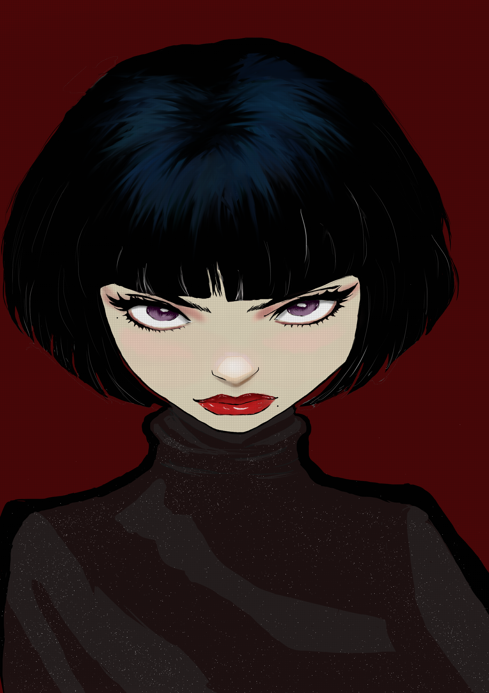
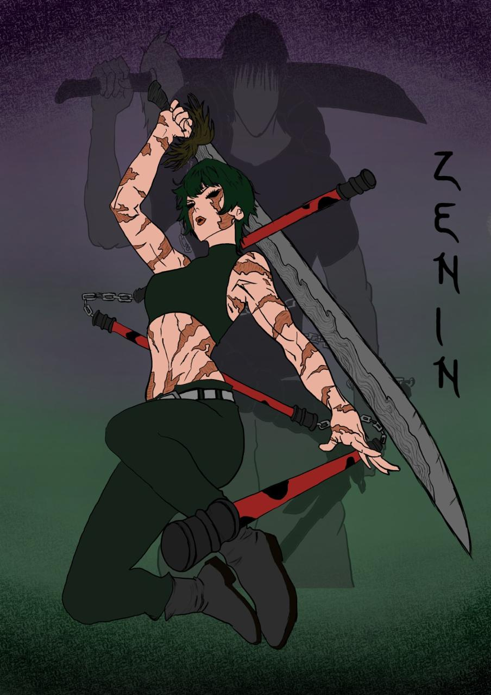
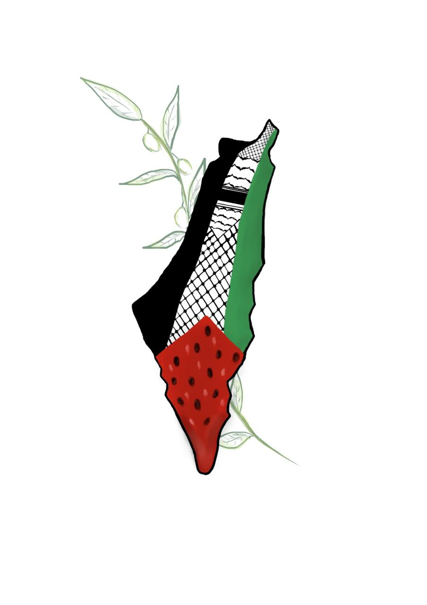
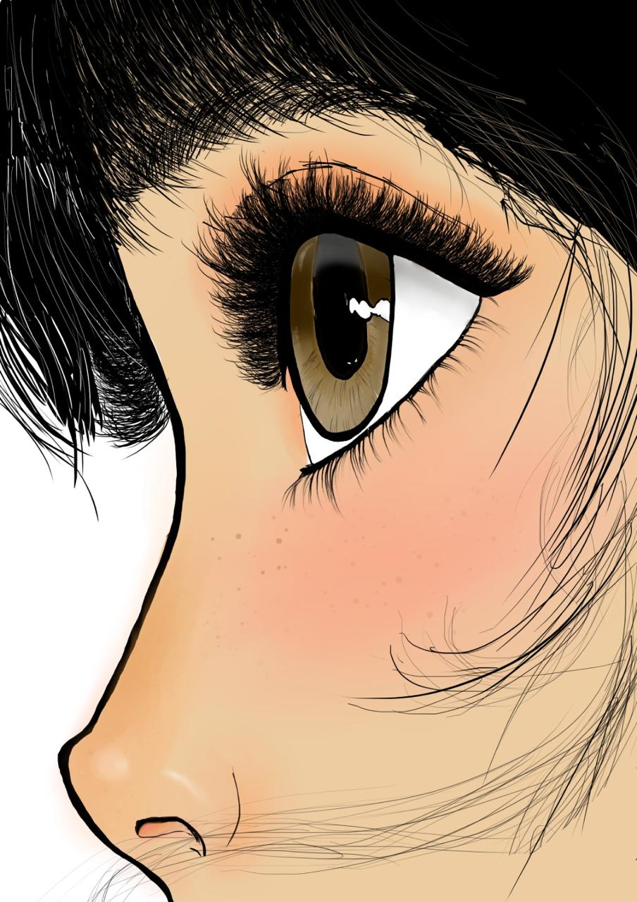
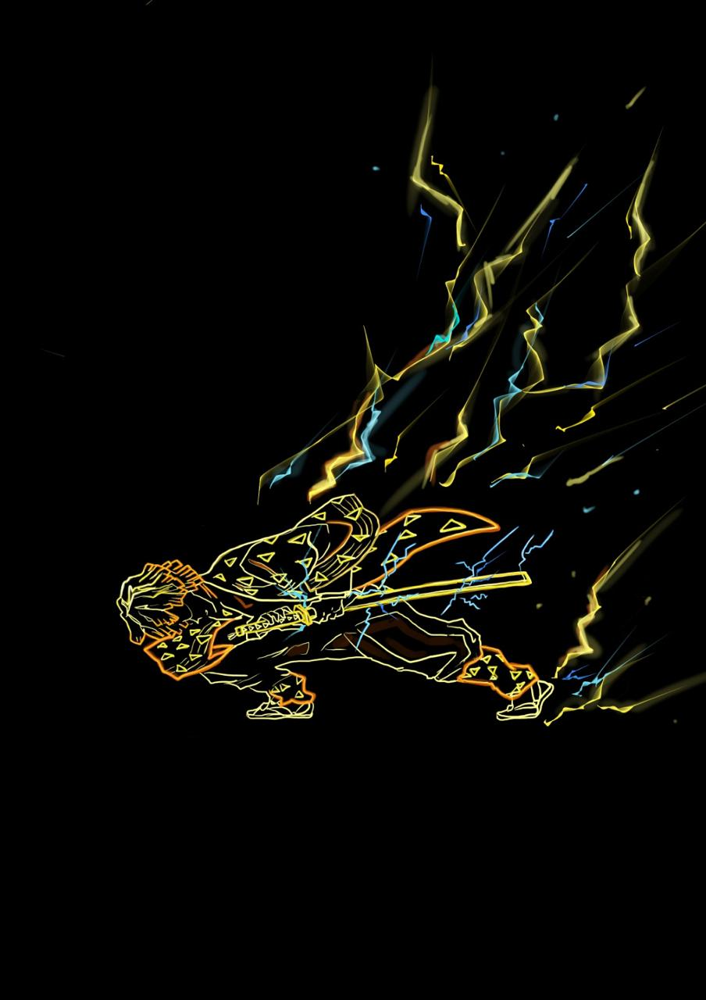
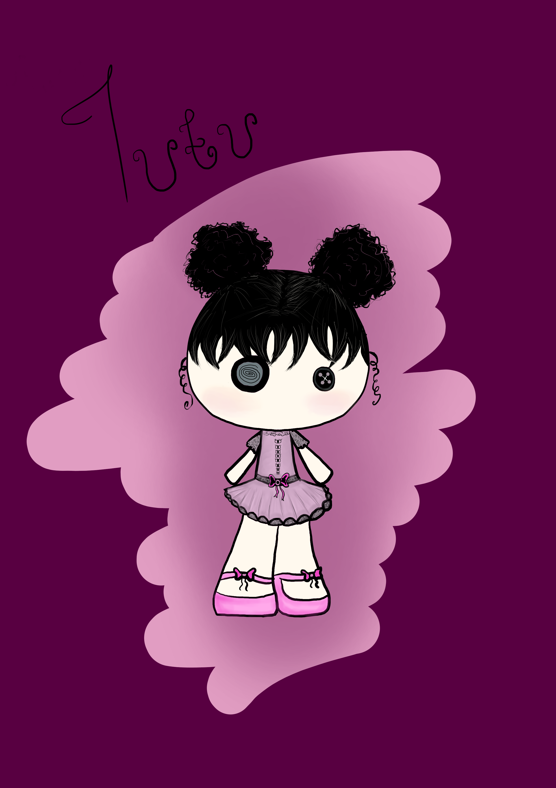
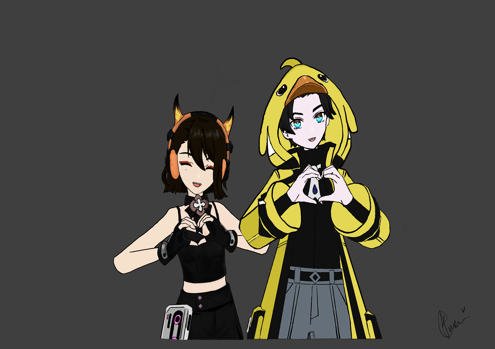

Artworks
What follows is a series of artworks that I have created and experimented with.







.png)
.png)
.png)

About my work
I tend to dabble in quite a bit of digital art, traditional art as well as photography. I also experiment with paintings including water colour, oils and acrylics, but for now I have just included some of the digital pieces I have created.
Some of these include fully rendered works, semi rendered works and even sketches before reaching a final product. I've also included artworks that i've made for games such as starting screens, quit screens and game over screens.
So, what's my story? and what did I use to make these?
My story goes way back, I started drawing digitally in highschool but I only used mobile drawing apps where I drew with my fingers (this is a pain that I'm glad I don't have to revist). At the time I drew more traditionally, it wasn't until university that I started drawing digitally again and this is where we are now! For the many digital artworks displayed above, and below, I have used Krita. Many people complain about how complicated it is to get around it, but I have been using it for a while and grew to understand it, allowing me to prefer it over other types of softwares, hence why many of my artworks are made using it.
I often find inspiration from underrated topics, fictional stories and emotional settings, as I feel they can evoke the most feeling when analysing a piece.
What's my goal? What do I strive to achieve?
I strive to create meaningful stories that can drive an emotional response from viewers, making viewers feel seen, heard and understood. This is why I prefer creating from an emotional standpoint. Other times I create for the sake of being creative. I want to hone my skills and improve my creative skills and processes with the hopes of having what I create, even collaboratively, to reach people and allow them to tell their own stories.


